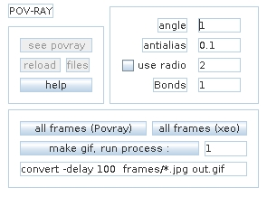
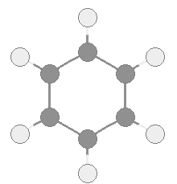
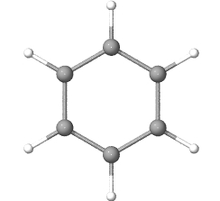
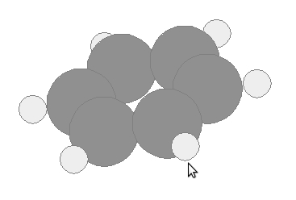
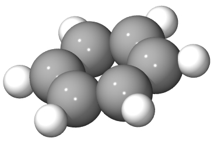
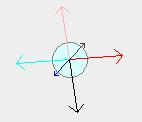
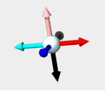
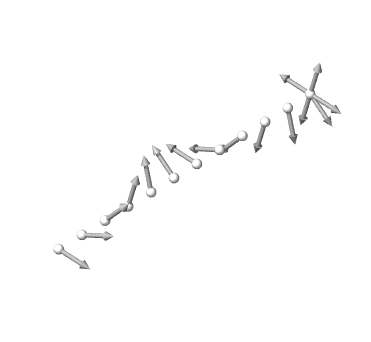

POV-Ray

Press see povray
|  |  |
|  |  |
|  |  |
If you press (all frames), it creates a folder with all the frames of your dinamic (xyz format).
After you create all the frames you can create a animated gif pressing (make gif)
 |
 |
[up]
[table of contents]